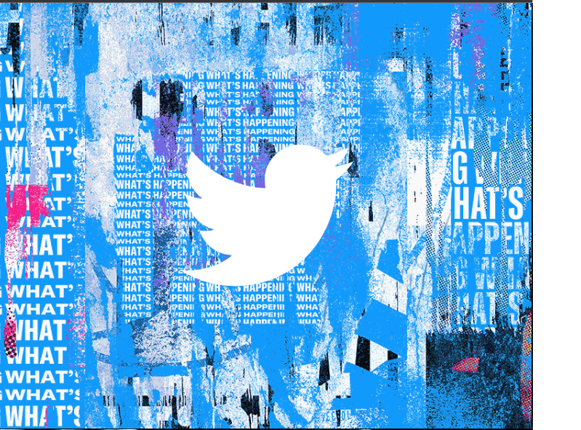

Anirudh Devarakonda
57 Tweets


Edit Profile
Tweets
Tweets and Replies
Media
Likes
Anirudh Devarakonda @andy_dev - Feb. 11
Always check the replies for clarification before you retweet a tweet,
people
deliberately mislead with their tweets.
deliberately mislead with their tweets.
Canada Trends
1 Trending
Cosc 310
Twitter Clone
2 Trending
Cosc 310
Twitter Clone